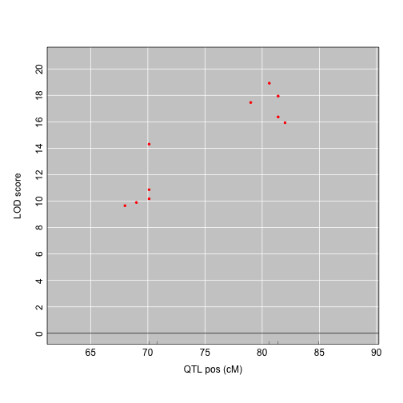
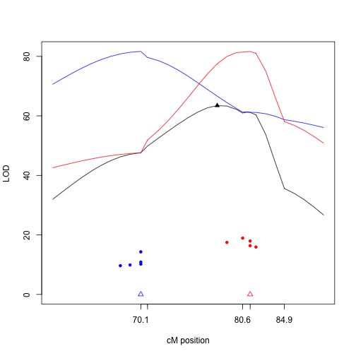
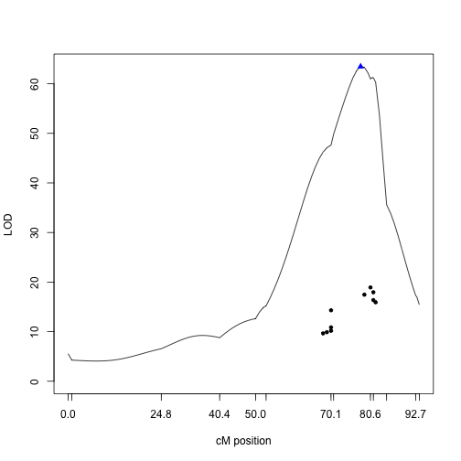
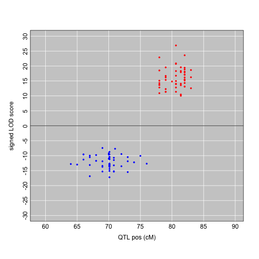

QTLpvl
testing of pleiotrophy vs close linkage
R package still in working...

Introduction to qtlpvl
This package is focusing on QTL mapping with multiple traits and testing of pleiotrophy vs. close linkage.
Data
We use data listeria from R\qtl as an example. We will be only
using the genotypes of this F$_2$ population and generate the
phenotypes from normal distribution.
set.seed(92950640)
data(listeria)
listeria <- calc.genoprob(listeria,step=1)
n <- nind(listeria)
chr <- "1"
geno <- pull.geno(listeria, chr=chr)
genotype1 <- geno[,7]
genotype2 <- geno[,10]
(pos <- unlist(pull.map(listeria, chr=chr))[c(7,10)])
#> 1.D1M451 1.D1M355
#> 70.11 81.40
p <- 10
p1 <- floor(p/2)
G1 <- matrix(genotype1, n, p1)
G2 <- matrix(genotype2, n, p-p1)
G2[G2==3] <- 2
G <- cbind(G1, G2*(-2))
Y <- matrix(rnorm(n*p),n,p)
Y <- Y + G
In the above code, after setting the random seed, we load the data
listeria and pull out the genotype data from the cross object
listeria on chromosome 1 as a data matrix geno, which is of
size 120 $\times$ 13. We pick the 7th and 10th marker as
the two QTLs and save their genotypes in genotype1 and
genotype2. These two QTLs are at position 70.11
cM and 81.40 cM on chromosome 1.
Assume the first QTL have additive effect only and the second QTL have
dominant effect --individuals with genotype 2 and 3 are grouped
together to have the same shift in mean. The first 5 traits are
controlled by the first QTL and the other 5 trait of the total 10 are
controlled by the second QTL with negative effect. We use matrix G to
save the QTL effects and the second QTL group, G2 is multiply by -2
to have a negative QTL effect. The 10 phenotypes are generated with
these QTL effect matrix G plus independent noise generated from
standard normal distribution.
We could first look at the single triat analysis result. For each trait, we plot its LOD score versus QTL position when the LOD is bigger than a threshold (default value is 3).
plotLOD(listeria, Y, chr)

joint mapping: scanone.mvn
Having the cross object listeria and phenotype trait matrix Y
prepared, we can first run a joint mapping with scanone.mvn, which
assumes multivariate normal model. chr is set to be "1", which
indicates the mapping is only on chromosome 1. Function scanone.mvn
has two more parameters addcovar and intcovar, they could be used
to control for additive and interactive covariates when needed.
The result of joint mapping is a data frame with class scanone, we
could apply (S3) method summary and plot to look at the result.
out <- scanone.mvn(listeria, Y, chr)
summary(out)
#> chr pos lod
#> c1.loc78 1 78 63.5
plot(out)
We could see the QTL is at 78.00 cM with LOD score 63.46.
test of 1 vs 2 QTL: testpleio.1vs2
We test the hypothesis of:
- $H_0$: There is only one QTL affecting all the phenotypes;
- $H_1$: There are two QTLs, each affecting one of the two phenotype groups.
We assume the traits follow multivariate normal distribution and perform joint mapping to locate the single-QTL under the null hypothesis that there is one pleiotrophic QTL affecting all the traits; we then run single trait analysis on each trait and find the trait-specific QTL, sort the traits by their QTL position and search for the best separation of the traits into two groups, where the first group (contains the first several traits) is controlled by the right QTL and the second group (contains the rest traits) is controlled by the left QTL. The LOD score of this two-QTL model is then subtracted by the LOD score of the single-QTL model to arrived at the final test statistic.
To get the null distribution of the statistics, we have two methods:
- parametric bootstrap: generate data from the parameters estimated under the null hypothesis
- stratified permutation: randomly permute the genotype data versus phenotype data with in each QTL genotype group,
we repeat the whole procedure on data from either method and save the test statistics. The P-value is calculated from this empirical distribution.
Function testpleio.1vs2 is used to do this test. input parameters:
- cross: An object of class
cross. - Y: matrix of multiple traits with n rows.
- chr: One character strings referring to chromosome of interest by name.
- region.l, region.r: left and right bound for the interval of interest.
- int.method: can have value of
bayesor1.5lod, method to calculated the interval of interest ifregion.landregion.ris not specified. - search: searching method for two-QTL model, can have value of
fastorcomplete, default isfast. - RandomStart: use random starting point for the two-QTL model or not,
default is
TRUE. - RandomCut: use random cutting or not when there are traits mapped to the same location. default is "FALSE".
- simu: "parametric" or "permutation" method for simulations. default is "parametric".
- n.simu: number of simulations for p-value.
- tol: Tolerance value for the
qrdecomposition inlmfitting. - addcovar, intcovar: Additive and interactive covariates to control for when mapping.
This function will return a list with class testpleio.1vs2, similar
to scanone, we could apply (S3) method summary and plot to look
at the result. In the summary, we could see the position and LOD score
for the single QTL and best two QTL model, as well as test statistics
LODdiff=LOD2-LOD1 and its P-value.
obj <- testpleio.1vs2(listeria, Y, chr, n.simu=100, region.l=60, region.r=90)
summary(obj)
#> Single QTL model: lod 63.46, pos 78.00 cM
#> Two QTLs model: lod 81.66, pos 70.11 cM, 81.40 cM
#> Traits influenced by the left QTL: 1 2 3 4 5
#> Traits influenced by the right QTL: 6 7 8 9 10
#> Difference of LOD score: 18.20
#> P-value is: 0 (from 100 simulations)
plot(obj)

The above figure shows the joint mapping result in black and profile for each of the two QTLs under $H_1$:
- red line: $L_1(\lambda_1) = \max_{\lambda_2} LOD2(\lambda_1, \lambda_2)$
- blue line: $L_2(\lambda_2) = \max_{\lambda_1} LOD2(\lambda_1, \lambda_2)$
Triangles indicate the position of the QTLs and solid points indicate QTL positions and LODs from single trait mapping.
We could also use plottrace to see how LODdiff changes when we move
the cut-point of the left versus right group. There are 7 possible QTL
positions from the above plot (result of single trait mapping), thus
we have 6 possible ways of grouping these positions into the left
versus right group. The 6 open dot indict the cut and their LODdiff.
Thus when the first 5 traits and the last 5 traits are grouped
separately, the LODdiff is the biggest, it is our best two QTL model.
This figure could be used as a diagnostic figure, to see if our best
two QTL model is better than the rest of all the possible models.
plottrace(obj)
test of 1 vs p QTL: testpleio.1vsp
We could also test the hypothesis of:
- $H_0$: There is only one QTL affecting all the phenotypes;
- $H_1$: There are p QTLs, each affecting one of the phenotypes, i.e., each phenotype is allowed to has its own QTL.
This function has much less parameters than the previous one. We have
cross, Y, chr, addcovar, intcovar and n.simu, the usage is
same as before. This function will return a list with class
testpleio.1vsp, similar to scanone and testpleio.1vs2, we could
apply (S3) method summary and plot to look at the result. In the
summary, we could see the position and LOD score for the single QTL
and p QTL model, as well as test statistics LODdiff=LODp-LOD1 and its
P-value.
obj2 <- testpleio.1vsp(listeria, Y, chr, n.simu=100)
summary(obj2)
#> Single QTL model: lod 63.46, pos 78.00 cM
#> Multiple QTLs model: lod 82.28
#> Triat POS LOD
#> X1 1 70.11 10.863
#> X2 2 70.11 10.174
#> X3 3 69.00 9.896
#> X4 4 70.11 14.309
#> X5 5 68.00 9.652
#> X6 6 80.62 18.919
#> X7 7 79.00 17.460
#> X8 8 81.40 17.945
#> X9 9 82.00 15.928
#> X10 10 81.40 16.367
#>
#> Difference of LOD score: 18.82
#> P-value is: 0 (from 100 simulations)
plot(obj2)

plot Genetic Pattern: plotGenetpattern
To illustrate the use of exploration plots, we generate data with more number of traits, 100. Same as before, the first half of the traits are controlled by the first QTL and the rest are controlled by the second QTL.
p <- 100
p1 <- floor(p/2)
G1 <- matrix(genotype1, n, p1)
G2 <- matrix(genotype2, n, p-p1)
G2[G2==3] <- 2
G <- cbind(G1, G2*(-2))
Y <- matrix(rnorm(n*p),n,p)
Y <- Y + G
Function plotGenetpattern takes two kinds of input parameters:
- a phenotype matrix
Yand a genotype vectorgenotype, the later should be genotype of the common QTL in most suspicious. - a phenotype matrix
Yand a cross object and chromosome number. This is used when there is no certainty of a single QTL for all traits and thus each trait is mapped separately and its own QTL genotype is used.
QTL additive effect is defined as a=(RR-BB)/2, QTL dominant effect is defined as d=BR-(BB+RR)/2, when plotted against each other, traits with pure additive effects are near the x-axis and traits with dominant effects are along the diagonals, $y=x$ and $y=-x$.
plotGenetpattern(Y, genotype=genotype1)
plotGenetpattern(Y, cross=listeria, chr=chr)
We can tell from both plots the there are two different genetic patterns, thus possible two different QTLs, even if they are closely linked.
plot LOD score with sign: plotLODsign
Using the same data, we could also display the direction of the QTL
effect with plotLODsign. Function plotLODsign takes input
cross, Y and chr, as well as addcovar and intcovar, all has
been introduced above.
For each trait, the QTL effect direction is used as the sign of the
LOD score. We first run single trait mapping for LOD scores and QTL
positions, then we use argmax.geno to impute QTL genotypes and
calculate mean for each of the 3 genotype group. We define the
direction positive when the mean of the first group is bigger than the
mean of the third group, and negative while not.
plotLODsign(listeria, Y, chr)

Session Info
sessionInfo()
#> R version 3.0.2 (2013-09-25)
#> Platform: x86_64-apple-darwin10.8.0 (64-bit)
#>
#> locale:
#> [1] en_US.UTF-8/en_US.UTF-8/en_US.UTF-8/C/en_US.UTF-8/en_US.UTF-8
#>
#> attached base packages:
#> [1] parallel stats graphics grDevices utils datasets methods
#> [8] base
#>
#> other attached packages:
#> [1] qtlpvl_0.1 qtl_1.29-2 knitr_1.5 devtools_1.4.1
#>
#> loaded via a namespace (and not attached):
#> [1] digest_0.6.3 evaluate_0.5.1 formatR_0.9 httr_0.2
#> [5] memoise_0.1 RCurl_1.95-4.1 stringr_0.6.2 tools_3.0.2
#> [9] whisker_0.3-2